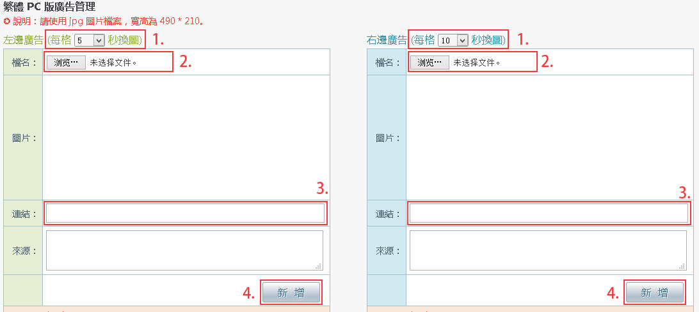
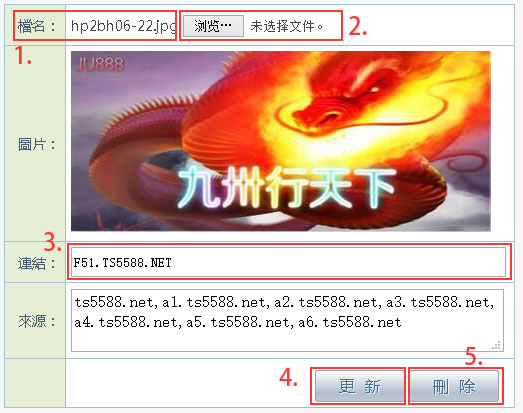

PC 版廣告管理
一、PC 版廣告管理
(系統設定 -> PC 版廣告管理)
二、新增廣告

操作步驟：
- 選擇此值，設定廣告輪播時，幾秒後換圖
- 圖檔：點擊【選擇檔案】：選擇您要放上的圖檔，如果廣告已有相同的檔案名稱，將不能新增
請使用 jpg 圖片檔案，寬高為 495 * 215
- 連結：輸入網址，當使用者點擊廣告時，將另開視窗連結此網址
- 點擊【新增】
三、修改與刪除

操作步驟：
- 圖檔：圖檔名稱是唯一的，不可重複
- 連結：輸入網址，當使用者點擊廣告時，將另開視窗連結此網址
- 點擊【選擇檔案】：選擇您要放上的圖檔，如果廣告已有相同的檔案名稱，將不能新增
請使用 jpg 圖片檔案，寬高為 495 * 215
- 點擊【更新】，儲存修改後的資料
- 點擊【刪除】，刪除這個廣告